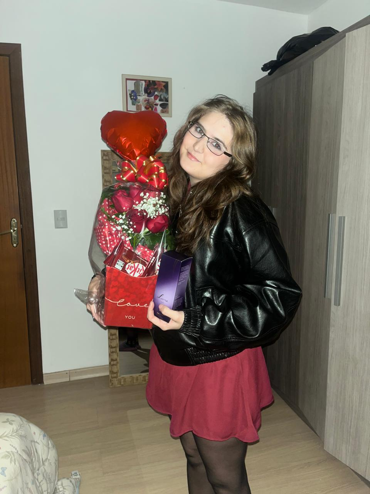
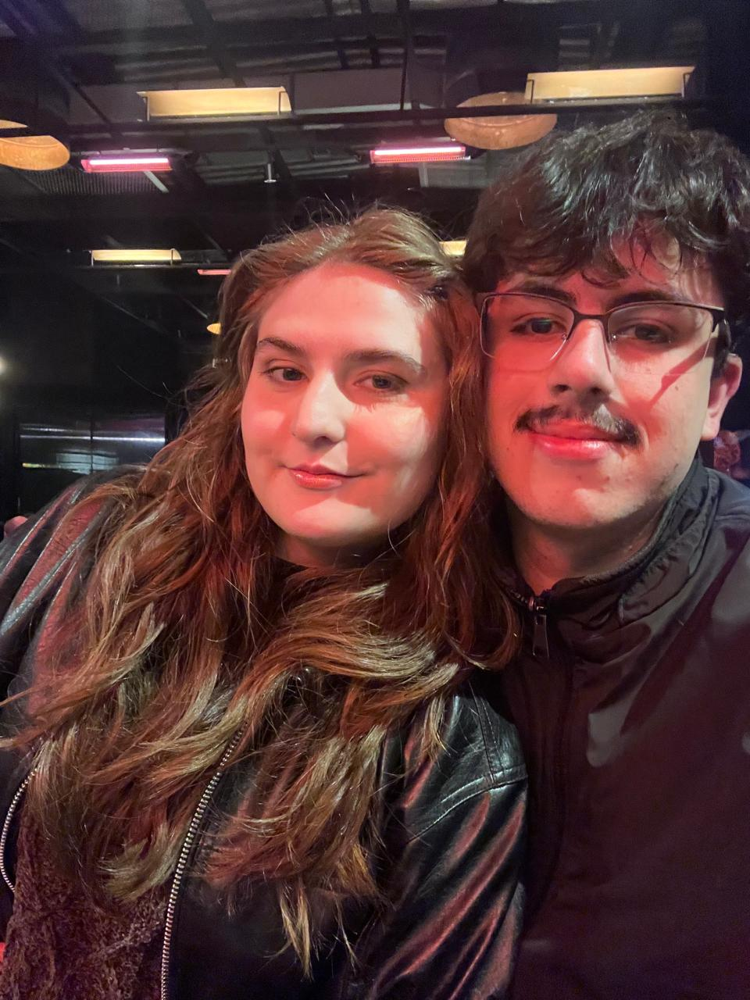
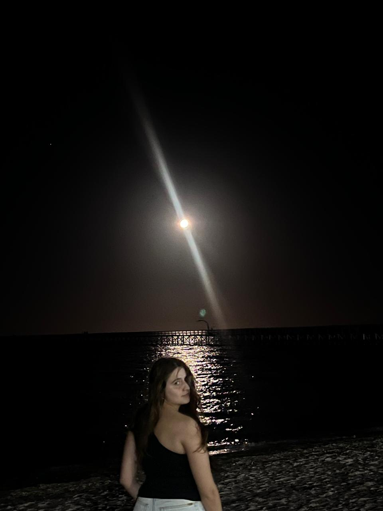
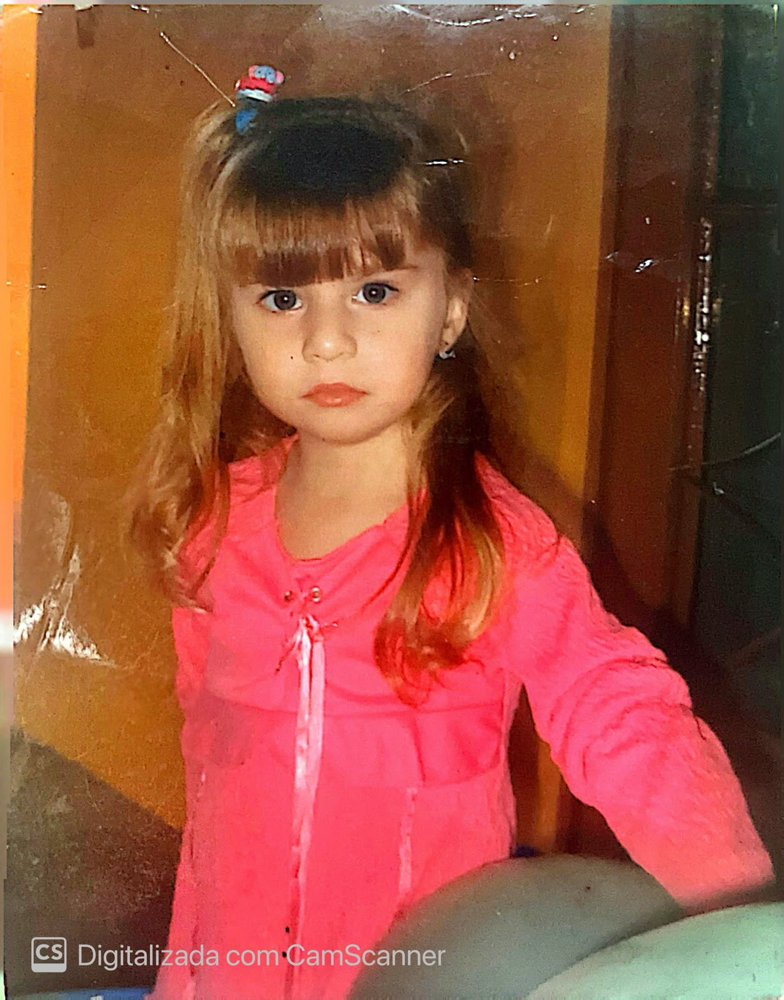

Você conseguiu,
meu amor.
Hoje, o orgulho é enorme. A felicidade também. Mas o amor por você… esse nem cabe nesta página.
Parabéns pela sua formatura! Que essa conquista seja o começo de uma vida cheia de realizações, sorrisos e sonhos que se tornam realidade.
Abrir minha cartinha ♥
Minha felicidade tem você.
Entre tantos motivos para sorrir, você continua sendo o meu preferido.



Ela teria tanto orgulho de você.
Meu amor, a menina desta foto talvez ainda não imaginasse todos os caminhos que iria percorrer. Mas, se pudesse te ver hoje, teria um orgulho enorme da mulher que você se tornou: forte, dedicada, incrível e maravilhosa.
Hoje, você conquista seu diploma em Farmácia. E aquela menina continua em você, celebrando cada sonho que se torna realidade.
E um carinho especial à sua mãe.
Esse orgulho também é dela, que te criou e ajudou a formar essa mulher tão especial. No seu jeito de cuidar, na sua força e no seu coração, existe também o amor que ela te deu.
À sua mãe, minha admiração e meu carinho por ter criado uma mulher incrível e maravilhosa — a mulher que eu tenho a felicidade de amar. Essa conquista é sua, Giulia, e também é um motivo lindo para ela se orgulhar de você. ♥
Para você guardar no coração.
Giulia, tenho uma coisa para te dizer… ♥
Meu amor,
Hoje eu quero te lembrar do quanto você é incrível. Sua formatura representa uma conquista linda, e eu tenho muito orgulho de você e de tudo o que construiu para chegar até aqui.
Que a Farmácia te leve a caminhos cheios de oportunidades, que você encontre alegria no que faz e que nunca deixe de acreditar nos seus sonhos. Você merece cada coisa boa que está por vir.
E, entre nós: agora é oficial, estou apaixonado por uma farmacêutica! E o orgulho que eu sinto de você só cresce a cada dia.
Quero continuar ao seu lado, comemorando suas conquistas, te abraçando nos dias difíceis e encontrando motivos para rir com você. Hoje é o seu dia, mas amar você é a minha felicidade de todos os dias.
Parabéns pela formatura, Giulia. Que você seja muito feliz nesta nova etapa. Eu te amo infinito! ♥
Com amor, Christopher.
Receita para a nova fase.
℞ Felicidade em dose diária
Efeito colateral: um namorado sorrindo feito bobo.
Receita de carinho — aprovada pelo meu coração. ♥
O mundo ganhou uma farmacêutica.
Eu já tinha ganhado o meu amor.